00全景与读法
自进化(self-evolving agents)要描述的机器其实很简单:一个 agent 由参数权重与非参数脚手架构成,外加一个更新算子把某种学习信号持久地写回其中之一。分歧全部产生在投影方式上——Gao 等按「何物 / 何时 / 如何 / 何处」四问投影,Fang 等按四组件控制回路投影,厦大按「相对环境的位置」投影成模型侧 / 环境侧 / 共进化,Ren 等(Schmidhuber 组)按更新目标投影成 θ 与 Σ 两支,微软研究院按 Substrate × Pathway × Pressure 投影。五种投影没有一种是错的,但它们不可互相翻译:同一篇论文在五份综述里会落进五个不同的格子。
每一节固定三段:叙事怎么说(左栏,灰)——这一支路线对外讲的故事,以及综述里的措辞;证据是什么(右栏,橙)——论文里被实际测出来的量,包括作者自己报告的负面结果;差在哪(下方色块)——两者的落差、证据的强度、对 RL-on-NPU 的含义。数字按来源分三类:第三方 独立复现或多方一致;自报 方法作者口径;推断 本站分析。本篇几乎所有增益数字都是作者自报,这一点本身就是第 08 节的论点。
贯穿全文有两条线索。其一是 θ 与 Σ 的分界:动 θ 是在固定决策过程上做标准策略优化,动 Σ 是在重塑决策过程本身,后者在标准 RL 里没有对应物——这条线解释了为什么产业全部走 Σ。其二是 打分者位于被打分者的下游:所有已记录的失效模式都能归到这一处结构性事实,这条线解释了为什么第 07、08 两节的结论如此一致。
本篇上线后,配套的对抗性核验拿到了 RLVE、R-Zero 与 Huang 等三篇的一手正文与源码,推翻了初稿的五处表述。① 初稿称 RLVE 把 effective prompt ratio 维持在「约 50–80%」——该数值在论文中不存在,全文未报告任何 EPR 数值,它只是图 3 里一条没有刻度标注的曲线。② 初稿称预言机选定的静态难度区间同样失败——论文对该档的原话是「comparable or even superior」,即持平。③ 初稿把 R-Zero 的 79.0% → 63.0% 读作「验证器衰减」——R-Zero 没有验证器,标签是 10 次采样的多数投票,而且在任何固定题集上打标器是变好的。④ 初稿称 Single-R-Zero 消融测出了「评估者-被评估者相关性」——该消融两个臂都从同一基座初始化。⑤ 初稿写 GPT-3.5 的错→对翻转率为 7.0%——图 1 的读数是 7.6%(74.7 + 8.9 + 7.6 + 8.8 = 100.0)。另有三处补回了被略去的限定条件,见第 04、05、06 节。
01五份综述:分歧是实质性的,不是措辞
先读地图,再读论文。这个方向在 2026 年同时出现了五份综述,而它们对同一批工作的组织方式互不兼容。最典型的三处分歧:记忆放在哪——Gao 归入 Context(What 的子类),Fang 设为单智能体优化支柱,厦大拆成两处(环境侧的动态经验演化,以及模块化架构演化下的记忆架构演化),Ren 视为脚手架分量 m,微软给它独立基质 M;「共进化」指什么——厦大的共进化分支以多智能体策略共进化开篇,微软则明确裁定「人工智能体之间的相互适应不算共进化,因为它不要求 H ≠ 0(人类参与)」,两者完全相反;技能是什么——Ren 把技能定义为「更新算子的一个可复用实例」,故意横切所有人当主轴的基质维度,厦大则把它当成环境侧的一个叶子节点。
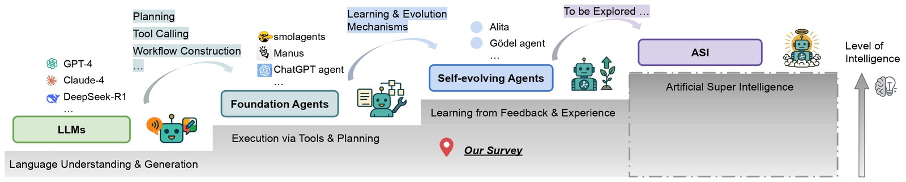
这张图怎么读
要看的是最右端那级台阶。这张图不是分类图,是一个主张:自进化被明确定位为通往 ASI 的必经台阶,而且台阶之间画成了单调上升的序列。整份综述的组织方式(四问都以「如何更接近上一级」为潜台词)由这张图决定。
第二处要看的是台阶之间没有任何返回箭头。第 07 节的失进化证据(拒答率从 99.4% 掉到 54.4%)与第 08 节的密封评测结果(隐藏集只从 0.13 动到 0.26)都表明,实际系统会在台阶上横向移动甚至后退。本站把这张图当作需要检验的假设,而不是结论——第 08 节回来检验它。
叙事怎么说
自进化是一个已成形的领域,有公认的定义与分类;读一份综述就能建立地图。五份综述互为补充,差异是措辞与侧重。
证据是什么
微软那份是唯一给出边界裁定程序的(Π/A、Π/M、A/M、H 四类歧义 case 各有判定规则)——这个程序存在本身就是分歧实质性的证据:如果边界清楚,不需要裁定程序。五份综述的论文数口径也不同(厦大 211、微软约 300、Agentic RL 综述 > 500),不可相互相减。
差在哪差异在「同一篇论文落进哪个格子」是否稳定。推断 实用后果有两条:一是不要用某一份综述的分类去检索另一份的引用,记忆类工作在五份里分布在五个位置;二是引用「这个方向有 N 篇论文」时必须带上口径。对 RL-on-NPU 的含义:选型时应当按 Ren 等的 θ/Σ 二分做第一刀,因为只有这一刀与「要不要动权重」这个工程决策同构——而这正是决定要不要占用 NPU 训练资源的那个决策。
02θ 与 Σ:最精确的那把刀
Ren 等(Schmidhuber 组)给出的定义值得逐字保留:一个 agent 是 A_t = (θ_t, Σ_t),其中 Σ_t := (p_t, m_t, T_t, g_t) 分别是提示词、记忆、工具、控制逻辑。他们的关键动作是把短暂的执行状态 X_t(KV cache、工作上下文,任务边界处重置)与内在配置 (θ, Σ) 分开:上下文内适应移动的是 X_t,不算自我改进;只有把变更持久写回 θ 或 Σ 才算。微软的表述等价:S^(t+1) = Φ(S^(t), E^(t) + H^(t)),「下标 t 标记的是更新事件,不是墙钟时间……S^(t) 只在一次固化写回时前进」。
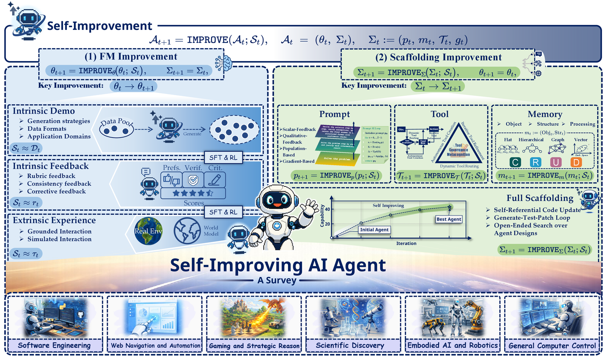
这张图怎么读
左右两半的不变量是读法的关键。左半 θ_{t+1} = IMPROVE_θ(θ_t; S_t),Σ 保持不变,三类信号分别是内生示范(S ≈ D_t,自己生成的数据)、内生反馈(S ≈ r_t,自己给的奖励)、外生经验(S ≈ τ_t,环境轨迹)。右半 Σ_{t+1} = IMPROVE_Σ(Σ_t; S_t),θ 保持不变,四类按被改的分量划分。
要带走的是这两半不对称:左半是在固定的决策过程上做策略优化,标准 RL 的全部工具都适用;右半改的是提示词、记忆、工具与控制逻辑,也就是改 MDP 本身——观测函数、动作空间、转移结构都会变,因此在标准 RL 里没有对应物。第 09 节产业全走右半,第 10 节昇腾的成本差异也全部由这条分界决定。
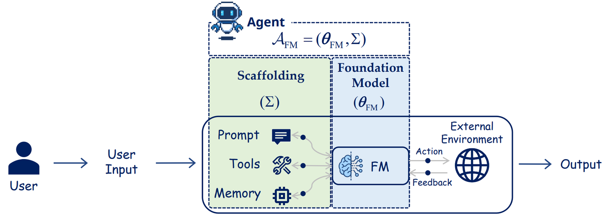
A_FM = (θ_FM, Σ),脚手架的三件常驻物(Prompt / Tools / Memory)全部接在基础模型的输入侧。自报 同图 2 出处,MIT。这张图怎么读
要看的是箭头的方向:提示词、工具、记忆三个方框的箭头都指向 FM 的输入端,而不是指向 FM 内部。这张图用最少的笔画说明了第 09 节那句结论的架构成因——一个生产 agent 就是冻结解码器前面的一条上下文装配流水线,学到的改进只有两个地方可放:权重里(蓝色方框内),或字符串里(绿色方框内)。
第二处要看的是外部环境只与 FM 交换 Action / Feedback,不直接写脚手架。这意味着环境反馈要变成持久改进,必须经过一个显式的写回步骤——第 05 节的记忆写入策略(Mem0 的 ADD/UPDATE/DELETE/NOOP、ReasoningBank 的双提示抽取、SEDM 的 A/B 重放准入)全部是这一步的不同实现。推断 写回步骤是整条链上唯一可被审计与回滚的位置,这也是第 09 节第二条理由的来源。
叙事怎么说
agent 在「学习」「进化」「自我改进」;上下文里多记了几条经验、下一轮表现更好,就是学到了东西。
证据是什么
Ren 等把这条线划死:上下文内适应移动的只是 X_t,任务边界处重置,不构成自我改进。同一判据被微软独立给出(「S^(t) 只在一次固化写回时前进」)。推断 两组人从不同出发点得到同一条边界,是这个形式化可信度最高的证据。
差在哪差异在「持久写回」这个动作是否发生。推断 这把刀最直接的用法是做负面筛查:一个宣称自进化的系统,如果说不清它把什么写回了哪里、下次冷启动时还在不在,那它做的是上下文内适应。与本站 D41 的接口(已更正):Ren 等的 Σ=(p, m, T, g) 与 D41 记录的 Prime Agent harness H=(p, G, K, M) 在同一个位置做切分,但不是同一构造,四个分量也不逐项对应(Σ 有工具与控制逻辑而无子代理,H 有子代理与技能而无显式控制逻辑槽位);核验还查清 D41 引用的 Continual Harness(Karten 等,arXiv 2605.09998)与 Prime Agent 的 /refine 在关键语义上相反——前者第一步就重写系统提示词、每 50 步自动变异且无接受测试,后者明示永不改写不可变的基础系统提示词并带快照回滚,二者是同源谱系而非同一系统;Ren 等还注意到术语正在合流——社区越来越多地说 harness,他们说 scaffold,也就是说本站 D29/D41/D42 追踪的 harness 文献与这里的「脚手架改进」分支是同一批工作的两个名字。
03三支路线与它们的体量
厦大综述的三支分类是唯一「顶层即编年史」的划法:模型侧、环境侧、模型-环境共进化,加上一支 Benchmarks。三支的条目数(本站按仓库条目程序化点数,推断)很能说明问题:模型侧 76、环境侧 110、共进化 25,而共进化几乎全部是 2025–2026 年的工作。时间线可以钉死:模型侧的根在 2022 年 3 月(Self-Consistency 与 STaR 同月);环境侧的根在 2021–2023 年(WebGPT、ReAct、MemGPT、MemoryBank);共进化几乎全部在 2025 年之后。
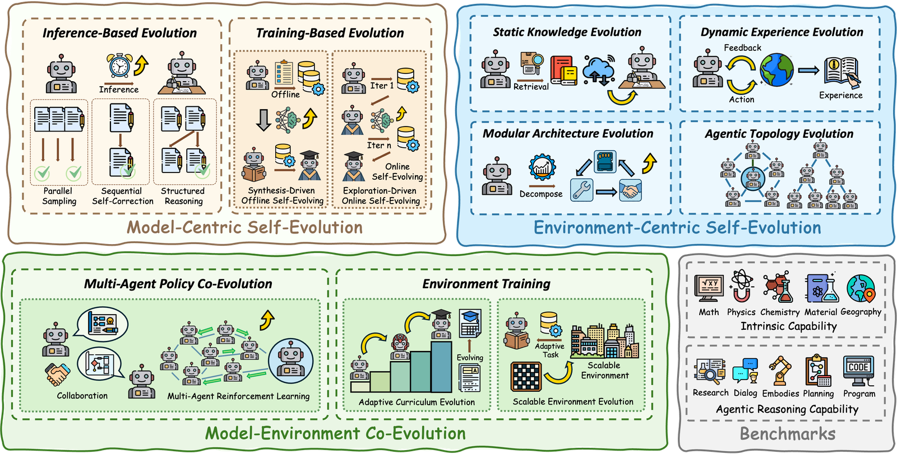
这张图怎么读
不要从左往右读,要先数每一支的叶子密度。环境侧的叶子最多(110 条,最大叶子是终身经验演化 16 条与工具增强演化),模型侧次之(76 条,最大叶子是探索驱动在线自进化 33 条),共进化最少(25 条)。叶子密度就是这个方向的资源分配图:冻结权重、改其余一切,是当前投入最大的一支。
第二处要看的是「环境侧」这一支的异质性——它同时容纳了 RAG、工具学习、记忆系统、工作流搜索与拓扑优化。这是第 01 节说的「环境侧成了大杂烩」的具体表现:这一支的内部差异大于它与模型侧的差异。推断 读这一支时按「S 是什么、搜索算子是什么」重新分组,比按综述的叶子分组更有用。
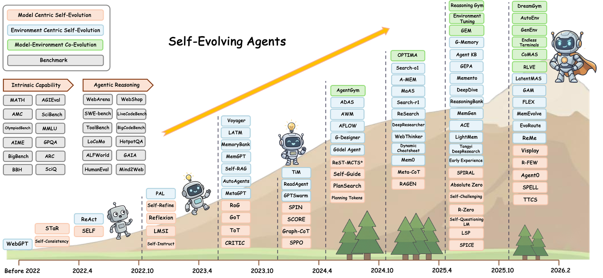
这张图怎么读
只看颜色沿对角线的变化,不要逐个认方法名。左下角起点是 2022 年的 Self-Consistency 与 STaR(粉,模型侧),中段大面积转蓝(环境侧),右上角 2026 年的 DreamGym、AutoEnv、GenEnv、RLVE、CoMAS 是绿(共进化)。颜色随时间从粉变绿,就是三支路线依次被激活的直接可视化。
要带走的是这个序列不是偏好更迭,是失效模式驱动的:模型侧撞上「没有外部验证信号」(第 04 节),于是转向环境侧去借外部信号;环境侧撞上「环境是静态的、与训练脱节」,于是转向共进化让环境也动起来。图 10 把这条因果链画成了一行三格。
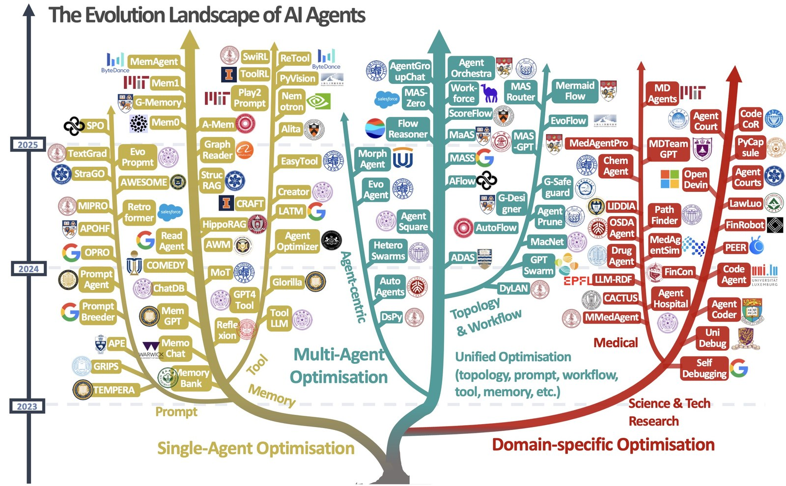
这张图怎么读
把这张图与图 4 并排看,就看到了第 01 节说的「分歧是实质性的」:同一批工作(Reflexion、Mem0、A-Mem、ADAS、AFlow、MaAS、GPTSwarm 都在两张图里),在图 4 里按「相对环境的位置」分成三支,在这里按「优化对象」分成三枝,两种切法互不包含——例如记忆类工作在这里是单智能体优化的一整条金色枝,在图 4 里则被拆到环境侧的两处。
第二处要看的是纵轴年份刻度:2023 → 2024 → 2025,枝叶密度逐年放大,而最右侧的领域专用优化(医疗、科技研究)几乎全部在 2024 年之后长出。推断 这支与前两支性质不同——它不提出新的更新算子,而是把已有算子搬进垂直领域,因此在评测方法学上继承前两支的全部问题(第 08 节)。
叙事怎么说
自进化有三支路线在并行推进,各有侧重,互为补充;共进化是最新最完整的一支,代表方向的未来。
证据是什么
条目数 76 / 110 / 25,共进化几乎全在 2025 年后。三支不是并行,是串行接力:每一支的兴起都由前一支被作者自己承认的失效模式驱动(图 10 把这条链画了出来)。而且同一批工作在另一份综述里会被切成完全不同的三枝(图 6)。
差在哪差异在三支是并行还是串行。推断 按串行读有两个实用后果:一是读某一支时应当先读它要修的那个失效模式,否则会把补丁当成新范式;二是共进化的 25 条工作还太新,其中相当一部分尚无独立复现(第 08 节),体量差 4 倍以上这件事本身就是「这一支尚未沉淀」的信号。
04模型侧:自己改自己,以及它为什么常常失败
模型侧分两个家族:合成驱动的离线演化(静态自举、知识精炼、泛化受限)与探索驱动的在线演化(纯自博弈 / 人类数据引导的自博弈,结构都是 Challenger 出题、Solver 解题的在线循环)。推理时的三种机制各有瓶颈:并行采样(Self-Consistency)是方差削减器而非偏差削减器,错误相关时投票只会放大,而且它是所有花哨方案必须在等 token 预算下击败的基线——多智能体辩论在 9 次响应的等预算下只有 83.0%,朴素 self-consistency 是 88.2%;序贯自我纠错的关键区别在批评意见的信息来自哪里,Reflexion 的评估器通常是外部二值信号(单元测试、环境成功)、CRITIC 明确路由过搜索引擎与解释器,这些有效;结构化推理(ToT、GoT、Meta-CoT、PlanSearch)把搜索显式化,但打分者仍是模型本身,因此继承同一个验证瓶颈——PlanSearch 的真正贡献是诊断出杠杆是多样性而非深度,在自然语言方案层面搜索把 Claude 3.5 Sonnet 的 pass@200 从 60.6% 提到 77.0%。
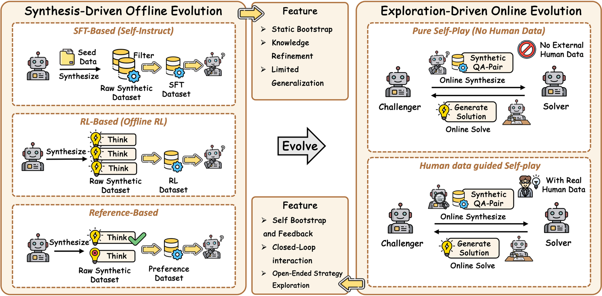
这张图怎么读
要看的是左右两半的闭环深度。左半的箭头从数据出发、经过滤回到 SFT,任务分布是外部给定的;右半多出一个 Challenger 方框,任务分布本身成了被优化的对象。这一格之差就是「离线合成」与「零数据自博弈」的全部区别——前者的不动点由数据集决定,后者的不动点由 Challenger 与 Solver 的博弈决定。
第二处要看的是右半「纯自博弈」与「人类数据引导」的分叉。这条分叉线上有一处常见误读:SPIN 不是零数据自进化——它的判别目标要求偏好人类 SFT 回答胜过自己的旧生成,所以它的不动点就是人类数据分布,无法超越。这一族普遍在 n ≈ 2 轮达峰。
内生自我纠错——模型无预言机地自评——在证据上是净负的:
| 设置 | 结果 | 必须一起读的限定 |
|---|---|---|
| GPT-4,GSM8K,两轮内生纠错 | 95.5 → 91.5 → 89.0 | 200 题随机子集,温度 1,单次运行——这个降幅是 13 道题 |
| GPT-3.5,GSM8K,一轮 | 对→错 8.8% vs 错→对 7.6% | 全集 1,319 题;净 −1.2 个百分点,统计上不显著(McNemar p ≈ 0.28) |
| GPT-3.5,CommonSenseQA | 75.8 → 38.1 | 作者自己归因于选择题的选项切换偏置,属 harness 效应 |
| Llama-2-70B,GSM8K | 62.0 → 36.5 | 四个模型均为 2023 年前后的非推理模型 |
| 同一循环但给预言机 | 75.9 → 84.3 | 预言机决定何时停手 |
这张表的效力有边界:「单调下降」只在 GPT-4 × GSM8K 这一格成立——同一批实验里 GPT-4 在 CommonSenseQA 上是 82.0 → 79.5 → 80.0 回升,GPT-4-Turbo 在 GSM8K 上是 91.5 → 88.0 → 90.0,换一个中性批评提示词后降幅只剩 0.5 个百分点即 200 题里的一道。稳健的结论是负向且比较性的:自评在任何一格都没有带来增益,且在等 token 预算下输给并行采样。
原因是信息论上的:如果模型能可靠分辨对错,它一开始就会给出对的答案。早期论文报告的增益是把真值标签用来决定何时停止纠错,于是循环只动了本来就错的答案——那是预言机引导的筛选,不是自我纠错。Kamoi 等的 TACL 综述把这一点推广到整个文献。机制上更细的诊断:GPT-4 只有 52.87% 的概率能找到 CoT 中第一个出错的步骤,但告诉它错在哪之后修复能涨 18 到 44 分——缺的不是修复能力,是独立的错误信号。
把逐字节相同的错误陈述从模型自己的 assistant 轮改标为 user 或 tool 轮,显式纠错率在 12 个模型-领域组合上跳升 23 到 93 个百分点。也就是说「LLM 不能自我纠错」里有相当大一部分是聊天模板下对自己文本的谄媚,而非认知上限。推断 这条结论对工程的直接含义:把自评环节的输入改写成外部来源的形式(工具返回、他人陈述),可能不改模型就拿到一部分纠错能力——代价是这属于提示词层面的 Σ 改动,收益上限仍受第 08 节的等预算对照约束。
训练时的零数据自博弈要造两样东西——任务分布与奖励,全部工程都在于各自如何接地:
| 接地方式 | 代表 | 可信度 |
|---|---|---|
| 可执行器 | AZR(Python 解释器判定)、Self-Challenging(Challenger 必须同时产出验证函数) | 最高,奖励无法被幻觉 |
| 零和博弈 | SPIRAL(胜负定义上正确,对手是不断变强的自己) | 高,且不饱和 |
| 语料 | SPICE(Challenger 看得到文档、Reasoner 看不到,故意打破信息对称) | 中,引入外部信息 |
| 多数投票 | R-Zero、SQLM、TTRL | 最弱,把推理时的自洽信号提拔成训练目标,错误因此永久化 |
课程接地则高度统一,都是「可学习性」/ 前沿奖励:当 Solver 的经验成功率接近 1/2 时奖励出题者(R-Zero 瞄准约 50% 不确定度,AZR 用 1 − 平均解出率)。这是防坍缩装置:只奖励难度,出题者会漂向无解噪声;只奖励可解,会漂向琐碎。
叙事怎么说
零数据自博弈让模型摆脱人类数据的上限:Challenger 不断出更难的题,Solver 不断变强,循环可以一直跑下去。
证据是什么
理论上自我改进是锐化(sharpening):它不能创造模型没有的信息,只能把概率质量集中到模型已能验证的序列上;可利用的量是生成-验证差距,有限且随预训练算力变化——每个零数据循环都在跑赢一个正在枯竭的资源。一项受控研究给出更硬的结论:严格的数据闸门(哪些被提议的任务准入训练)在所有奖励变体下都足以保证稳定,而一旦撤掉闸门,没有任何奖励设计够用。
差在哪差异在「循环能跑多久」由什么决定。叙事把答案放在奖励设计上,证据把答案放在数据闸门与生成-验证差距的存量上。推断 对 RL-on-NPU 的含义很直接:若闸门比奖励更决定成败,那么自博弈循环的工程重点应当从「设计更精巧的奖励」移到「实现一个严格、可审计、可复现的任务准入过滤器」——后者是 CPU 侧工作,不消耗加速卡,却决定整条曲线是否可信。本站 910B 实验脚手架的 source 块要求(日志 sha256 + 步区间 + env.json)服务的正是同一件事。
05环境侧:冻结权重,改其余一切
这一支冻结 θ,把策略写成 π(·|θ, S),S 是持久的非参数产物状态;「演化」就是在 S 上做搜索,而 LLM 既是优化器又常常是(不可验证的)奖励。表示上有一条清晰的阶梯:原始轨迹(Memento 的案例库)→ 原子事实(Mem0)→ 带链接的笔记(A-MEM 的卡片盒:关键词、标签、上下文描述、嵌入、链接)→ 蒸馏出的策略(ReasoningBank 的 {标题, 描述, 内容};ACE 的 playbook 条目)→ 概念(ArcMemo)→ 可执行技能(Voyager 的代码库)→ 潜变量(MemGen,完全不用文本)。抽象层级是核心权衡,而且经验上是双向的:高层洞见跨域可迁移(六个编码基准平均 +3.7%),低层轨迹则会引发负迁移。
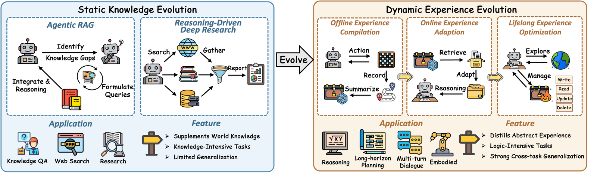
这张图怎么读
要看的是右侧第三格明确画出的 Write / Read / Update / Delete 四个操作——记忆是被 CRUD 的,不是被「积累」的。这一格解释了这一支真正的工程核心:Delete 与 Update 才是难的部分,Read 只是检索。Mem0 抽取事实后对最近邻的十条记忆发 ADD/UPDATE/DELETE/NOOP 工具调用;ReasoningBank 用 LLM 自评、无真值,一个提示抽成功策略、另一个从失败里抽反事实陷阱——失败被当作一等信号;SEDM 要求一条记忆只有在无环境 A/B 重放显示边际效用为正时才准入。
第二处要看的是左右两半标注的泛化性相反:左半(静态知识)写着「泛化受限」,右半(动态经验)写着「强跨任务泛化」。这与上一段的双向证据一致——高层洞见可迁移、低层轨迹负迁移,而抽象层级正是左右两半的差异所在。
遗忘机制被普遍当作这一支的答案,但本站核到的实现状态比论文叙述弱得多。MemoryBank 论文用艾宾浩斯指数衰减并在被召回时强化,而仓库里 enable_forget_mechanism 默认为 False、唯一的启动脚本把它硬编码为关闭,开启后还会 import 一个仓库中不存在的模块;其衰减式 math.exp(-t / 5*S) 按运算优先级解析为 exp(-t·S/5),与自身文档注释相反——强记忆反而衰减更快,而且它的「遗忘」是随机删除而非按效用。ACE 用增量 delta 更新加 helpful/harmful 计数,其 README 自述还会做确定性合并、去重与剪枝,但 Curator 提示词里写着「当前实现只支持 ADD 操作,不要输出 UPDATE / MERGE / DELETE」,playbook_utils.py 把这三个算子列在「TODO: 尚未实现」下——ACE 实际是严格追加的,唯一的边界是一个作为提示词文本注入、代码中并不强制的 80,000 token 预算。它的设计意图本身也是反收紧的(grow-and-refine),明确为了打败两件事——「简洁性偏置」(摘要丢掉领域细节)与「上下文坍缩」(反复重写整段上下文等于递归地跑一个有损自编码器,细节因损耗而死);LightMem 把固化推迟到离线「睡眠时」批处理,使在线成本保持平坦(在线 token 最高降 106× / 117×)。
模块化架构演化的区分点是搜索算子:ADAS 让元 agent 直接编写约 100 行的 forward 函数并把归档当种群;AFlow 用预定义算子(Generate / Review / Revise / Ensemble / Programmer)约束空间并跑 MCTS 变体;GEPA 用自然语言反思做变异,并维护逐实例分数的帕累托前沿而非单一全局最优;Gödel Agent 的算子是「任意自编辑」,包括改写那段改写代码的代码。拓扑演化把 S 设为通信图:GPTSwarm 用 REINFORCE 优化连接概率,G-Designer 从变分图自编码器解出任务自适应拓扑,MaAS 让拓扑逐查询条件化(从 agentic supernet 采样),成本因此降到基线推理的 6–45%。
叙事怎么说
给 agent 装一个记忆系统,它就能从经验里学习:做得越多、记得越多、表现越好。检索质量是关键。
证据是什么
这一支的工程核心在写入侧,不在读取侧——难的是准入、改写与丢弃。但「遗忘优于检索」这个更强的口号本站已收回:核验显示四个代表系统里有三个把「增长控制」实现成了对进入上下文的内容做排序与筛选,那本身就是检索。ACE 明确把「上下文坍缩」命名为失效模式:反复重写整段上下文等于递归地跑一个有损自编码器。第 07 节给出了积累本身的代价——仅仅是记忆累积,就让一个 Qwen3-Coder-480B agent 的拒答率从 99.4% 掉到 54.4%,没有对手,也没有参数更新。
差在哪差异在「记得越多越好」是否成立。证据说不成立:记忆是被 CRUD 的资源,而 Delete/Update 策略决定系统的长期行为,包括安全行为。推断 对昇腾的含义在第 10 节:检索优先的记忆系统(如 ReMe 把记忆存成 Markdown、用 BM25 做行级片段检索)负载在 CPU 侧,与 NPU 无关;上下文优先的记忆系统把每次 rollout 变成长 prefill 作业,约束立刻变成 KV 容量与 prefill 吞吐,并且要遵守一条明确的前缀布局规则。
06共进化:自适应课程其实是梯度信号保全装置
共进化分两半,性质不同:可扩展环境演化主要是供给(造更多可执行世界),自适应课程演化才是真正的闭环——环境的输出分布是当前策略的函数。核心机制可以被精确说出来:每次 RLVR 训练都有一个隐藏量——采样到的提示中,rollout 组既非全对也非全错的比例。在 GRPO 式的组相对优势下,全对或全错的组给出零优势,因此零梯度。RLVE 把它命名并测量为 effective prompt ratio。
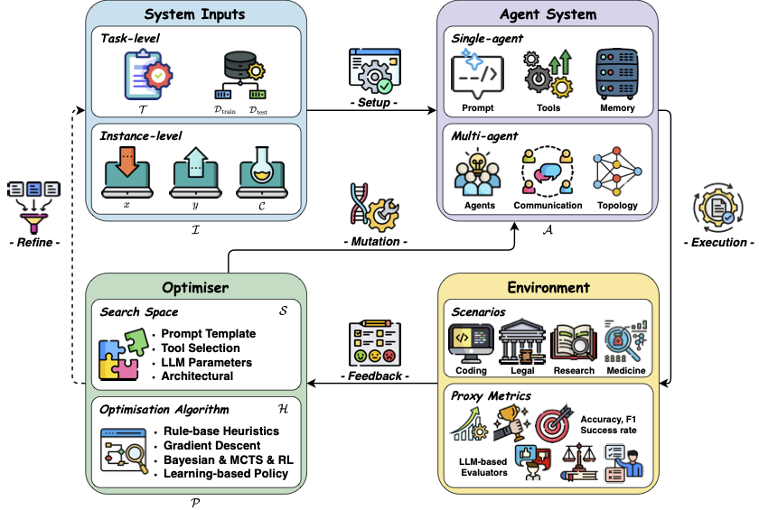
这张图怎么读
这张图的价值在于给出「反馈从哪里进入」的统一词汇。要看的是 Optimiser 这一个槽位:提示词优化器、记忆管理器、工作流搜索器、拓扑搜索器全部是同一个槽位的不同实例,它们的差别只在两处——搜索空间(提示词模板 / 工具选择 / LLM 参数 / 架构)与优化算法(规则启发式 / 梯度下降 / 贝叶斯、MCTS、RL / 学习型策略)。第 05 节列举的 ADAS、AFlow、GEPA、Gödel Agent 的区别,用这张图说就是「同一个 Optimiser 槽位里换了搜索算子」。
第二处要看的是 Feedback 这条边的起点是 Environment。共进化的全部增量就在于:把这条边的起点也变成可优化对象。一旦环境可变,Feedback 的分布就成了当前策略的函数——闭环从此有两个自由度,第 07 节的失效模式也从此有了第二个来源。
RLVE 把这个量定义在提示而非 rollout 上——「rollout 给出非同一奖励、因而不被 DAPO 的动态采样丢弃的提示所占百分比」。本站更正:初稿写的「维持在约 50–80%」在论文中不存在——全文只有 3.37%、0.49%、约 2% 与 τ_acc = 90% 这几个百分数,EPR 仅以图 3 中一条无刻度标注的曲线出现。可核实的只有方向与两端:静态低上限区间的比例「最终掉到零」,静态高上限「保持非零,但显著低于自适应」;而预言机选定的那一档(其难度分布与同分布评测集重合)论文只写到持平——「即便没有这一优势,RLVE 也取得相当或更优的同分布性能」。该消融只有一个模型两个环境,单次运行、无种子与误差棒,也没有把「维持可学习区间」与「难度单调上爬」分开。即便如此,方向仍然支持同一个解释:自适应课程有效是因为它是梯度信号保全装置,不是因为教学法。代表结果(均为 自报,设置见括号):RLVE 用 400 个可验证环境,在 1.5B 推理模型上六个基准平均 +3.37%,而继续原有 RL 只有 +0.49%——但这不是受控对照:两臂的任务分布、RL 算法、代码库与算力都不同,基线是第三方提供的 checkpoint,算力方向对 RLVE 有利(约 1,100 对 3,600 H100 卡时),因此它能支持的是「更省」而非「环境数量带来增益」;DreamGym 在 WebShop / ALFWorld 上用纯合成、零真实交互匹配需要 8 万次真实交互的 GRPO / PPO;Environment Tuning 仅用 400 个训练实例把 Qwen2.5-7B-Instruct 的 BFCL V3 从 7% 提到 37%。
叙事怎么说
自适应课程模仿人类教学:由易到难、循序渐进,所以学得更快。环境与模型互相促进,共同进化。
证据是什么
RLVE 的消融指向机制而非教学法:有效的是保住 effective prompt ratio,也就是保住非零梯度(论文只给曲线方向,未给数值)。静态低上限的比例掉到零、静态高上限显著更低;预言机选定的那一档只到持平,所以「难度选得准就行」被削弱但未被排除。SPICE 给出这一支最干净的共进化动力学证据:Reasoner 对固定 Challenger 的通过率 55% → 85%,对同步演化的 Challenger 则 55% → 35%。
差在哪差异在解释层级:教学法解释预测不了「静态区间的有效提示比例会掉到零」,梯度信号解释可以;但本站已把「连预言机区间也失败」这句收回,论文在那一档只主张持平。推断 这条机制对 RL-on-NPU 是可直接用的:effective prompt ratio 应当成为训练看板的一等指标——它是可在线测量的标量(每个提示的 rollout 组是否既非全对也非全错),比 reward 曲线更早地告诉你梯度是否已经消失。本站 910B 脚手架当前记录的是 critic/rewards/mean 与 actor/kl_loss,这一项尚未纳入。
07失效模式:打分者位于被打分者的下游
自进化是一个控制回路:提议、打分、接受或丢弃。所有已记录的失效都是这三个箭头之一的失效,而且几乎都来自同一个结构性事实:在自进化系统里,打分者位于被打分者的下游。
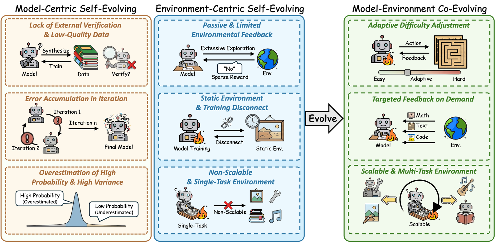
这张图怎么读
这张图的读法是从左到右的因果链,不是三栏并列:每一支的存在,都是前一支失效模式逼出来的。左列三条是模型侧被作者自己承认的问题,中列三条是环境侧的,右列三条是共进化声称的回应——右列与中列一一对应(自适应难度对静态环境,定向反馈对稀疏奖励,多任务环境对单任务环境)。这正是图 5 里颜色从粉变绿的原因。
要带走的是这张图没画出的那一格:共进化自己的失效模式。本节下面的五条(打标与课程耦合、裁判被刷、接受规则洗噪声、失进化、pass@k 收缩)在综述的这张图里没有位置,它们来自各方法的原始论文与独立复现。推断 一份综述的「局限」栏通常只覆盖到上一代,当代的失效模式要回到一手论文里找。
① 打标机制与课程目标耦合,标签质量因此在训练分布上被设计着变差。 R-Zero 给了一手数字:随着 Challenger 把题变难,多数投票伪标签的真实准确率 79.0% → 69.0% → 63.0%(Qwen3-4B-Base,每档 200 题,以 GPT-4o 为「完美标注者」)。本站更正:初稿把这条序列读成「验证器衰减」,这是错的——R-Zero 没有验证器,标签是 Solver 自己 10 次采样的多数投票;同一张表显示,在任何固定题集上打标器是变好的(Solver-45 在 D_15 上 61.0 对 59.0,在 D_45 上 50.5 对 47.0)。下降的那条序列量的是评测分布在变难,不是打标器在变坏。
真正的机制反而更尖锐,而且是设计进去的:Challenger 的不确定度奖励 1 − 2|p̂ − 1/2| 在 p̂ = 0.5 处取最大,过滤器只保留 10 次采样中有 3 至 7 次一致的题——课程目标精确地把训练分布推到多数投票最不可靠的那个点上。作者还明确否认标签噪声是坍缩主因(0.6B 在标签准确率 70.6% 时就开始退化,4B 到 48.8% 仍能撑住),转而指向纯自造数据导致的模型坍缩。
Single-R-Zero 消融(出题者与解题者共享参数)的数字成立:伪标签准确率每一步都更差(63.4% 对 71.0%,第 45 步 32.6% 对 48.8%),且在第一个检查点就达峰。但本站更正:初稿称它测出了「评估者-被评估者相关性」——该消融的两个臂都从同一基座初始化,它隔离的是训练期的参数共享。后者另有独立证据:GRPO 组内验证器错误相关系数 0.530,于是 8 条补全的组有效样本量只有 1.70。
② 裁判可以被刷到与真值脱钩。 用无参考 LLM 裁判在 GSM8K 上做自博弈,裁判通过率从 0.72 涨到 0.94,而隐藏锚点测出的真实准确率始终停在 0.20;而且这些利用手法跨裁判族与规模迁移,严格的三裁判集成仍然接受 55%。裁判打的是合理性,不是正确性。
③ 接受规则把噪声洗成进展。 Agent 评测本身就噪声大(单次 pass@1 波动 2.2–6.0 个百分点,要检出 2% 的效应约需 9 次运行),而自进化循环反复用同一个开发集测试候选——这是不受控的自适应多重检验,agent 在对自己做 p-hacking。在贪心的「留出集涨了就留下」规则下,30–42% 的提交是假的,10–33% 实际有害;而当根本没有真实改进可得时,循环每次运行仍会提交 13–21 个虚假变更。
④ 失进化(misevolution)不是加了几步的奖励攻击。 在没有对手、也没有参数更新的情况下,安全性会沿全部四条演化路径退化:仅仅是记忆累积,就让一个 Qwen3-Coder-480B agent 的拒答率从 99.4% 掉到 54.4%;为 HumanEval 准确率做 AFlow 工作流优化,把拒答率从 36.3% 压到 5.6%,同时把 RedCode-Gen 的攻击成功率从 54.4% 抬到 83.1%。
⑤ RLVR 的 pass@k 收缩是真的,但被过度解读。 一次可审计的独立复现(每题 128 次采样、500 道 MATH500、4 个种子)确认了 pass@128 上 −3.20 个百分点(95% CI [−5.00, −1.40])。机制是 KL 正则的策略梯度最大化单样本奖励,对覆盖度无所谓,熵在约 200 个 GRPO 步内几乎耗尽。但这个指标本身有争议,ProRL / QuestA 在长时间训练配合参考重置下报告了扩张。诚实的状态是两阶段观点:利用会收缩边界,长时间探索可能扩张它。
叙事怎么说
自进化循环有内建的质量控制:候选要通过评估才被接受,不好的变更会被丢弃,所以循环是单调改进的。
证据是什么
五条失效各自有量:伪标签准确率 79.0 → 63.0;裁判通过率 0.72 → 0.94 而真实准确率停在 0.20;贪心接受下 30–42% 假阳性、10–33% 有害;无真实改进可得时每次运行仍提交 13–21 个虚假变更;记忆累积单独把拒答率打到 54.4%。质量控制器与被控制者出自同一个模型,这是结构问题,不是调参问题。
差在哪差异在评估的独立性。推断 三条可直接执行的工程约束:一,出题者与解题者不要共享参数——Single-R-Zero 的消融给了代价的量;二,接受规则必须留出一个从不用于选择的密封集,否则循环在做 p-hacking;三,安全指标必须随能力指标一起监控,因为失进化在没有对手、没有梯度更新的情况下也会发生。第三条对昇腾侧的长周期 agent 部署尤其要紧:记忆文件是会自己长大的,而拒答率不会自己被测量。
08评测:等预算对照下,演化打不过并行采样
这一节是本篇最冷的部分。先要说清测的是什么。 SEAGym 的形式化最干净:一次 agent 快照是 A_t = (M, H_t)——固定的基座模型 M 加可变的 harness 状态 H_t(提示词、记忆、工具、中间件、运行时状态、模型-工具交互循环)。如果 M 冻结,任何分数变化都不是模型能力,而是由 LLM 执行的 harness 工程。 这一句就消解了大量自进化修辞。
决定性的对照,几乎没人做:把同样的 rollout 预算给任务本身的推理时搜索,而不是给 harness 搜索。《Rethinking the Evaluation of Harness Evolution for Agents》在 89 个 Terminal-Bench 2.1 任务上、每题五次 rollout 做了这件事:
| 方案 | pass@1 | 条件 |
|---|---|---|
| 朴素并行采样 | 72.3 | 无测试 |
| harness 演化 | 67.4 | 无测试 |
| 并行采样 | 86.0 | 有测试可用 |
| harness 演化 | 75.8 | 有测试可用 |
| 演化后 harness / 初始 harness | 68.3 / 67.7 | 真正的 45/10/34 划分,在误差内 |
机制很朴素:两种做法买的都是对同一批任务的相关尝试,但 best-of-N 当场兑现收益,演化却必须把收益压缩成可迁移的产物、并在推理时再付一次。公平地说,演化的辩护是摊销:演化后的 harness 是可在未来任务上复用的固定成本,所以诚实的比较需要一个生命周期分母(多少未来任务才能摊平演化成本),而且 rollout 对齐不等于 token、美元或延迟对齐。另一项研究 HARNESSEVO 在 ALFWorld 上做等预算对照,得到 0.657 对 0.642(stock harness 与扁平字符串演化),无显著增益,并把原因命名为「预算分割陷阱」。
密封评测把头条数字打回原形。 RSI-Exam 让 agent 对着可见集迭代 12 小时,然后把提交的产物在全新容器里对密封集重放一次——「不能迁移的改进一分不得」。一次有记录的 10.5 小时运行中,可见集均值从 0.10 爬到 0.63,隐藏集只从 0.13 动到 0.26。HarnessDev 在 630 个未见 SWE-Pro 任务上评分:反馈方向与留出方向在 64 次版本切换中只有 34 次一致(53.1%,相当于抛硬币),可见增益 13.9 / 13.4 / 8.8 分对应的留出增益只有 1.43 / 3.17 / 2.70,9 个被声明的最终版本里只有 2 个真是留出最优。SEAGym 自己的数字说明了多视图评测的价值:TF-GRPO 与 AHE 在验证集上涨幅完全相同(都是 +17.1 分);但在留出同分布上 AHE 保住 +9.1 而 TF-GRPO 只剩 +3.6;在 OOD 上 AHE 涨 +6.3 而 TF-GRPO 倒退 2.5。单曲线报告会把这两个方法判成一样好。
叙事怎么说
自进化让 agent 在 N 小时内把分数从 X 提到 Y,提升幅度显著;这是模型在自我改进的直接证据。
证据是什么
等 rollout 预算下 72.3 对 67.4,有测试时 86.0 对 75.8,朴素并行采样两侧都赢;做了真正的训练/验证/测试划分后 68.3 对 67.7,在误差内。密封集上可见 0.10 → 0.63 而隐藏 0.13 → 0.26;HarnessDev 的反馈方向与留出方向一致率 53.1%,相当于抛硬币。
差在哪差异在分母与密封集,这两项在绝大多数自进化论文里都缺席。推断 本站判断:回到图 1 的强主张(自进化是通往 ASI 的台阶),以本节的证据看,更准确的说法是——自进化目前被可靠证明的,是一种在给定任务分布上把推理时搜索结果摊销成可复用产物的方法,而这件事的收益在等预算与密封评测下尚未稳定跑赢直接搜索。 这不否定这个方向,但它把举证责任移回了作者一侧。
09产业:所有已出货的自进化都写文本,不写权重
这一角度最吃重的事实是架构性的,不是意识形态的:一个生产 agent 就是冻结解码器前面的一条上下文装配流水线(图 3)。每一轮,harness 把系统提示、工具 schema、技能元数据、记忆文件、对话历史与用户请求拼成一个字符串,模型是这个字符串的纯函数。所以学到的改进只有两个地方可放——权重里,或字符串里。
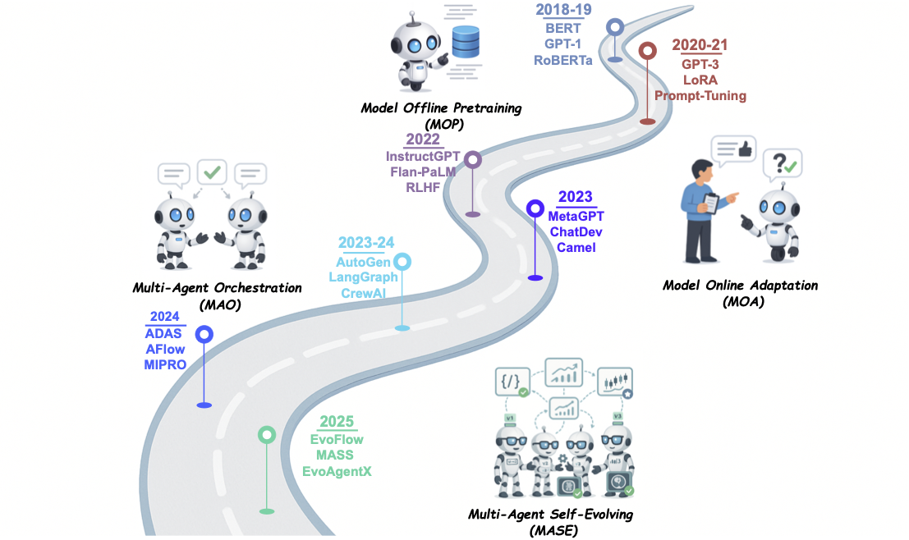
这张图怎么读
要看的是第二段到第三段的那次转折。2020–22 那一格(LoRA、Prompt-Tuning、RLHF)仍然在动权重;2023 年之后的两格(编排、自进化)全部不动权重。这条转折线与图 2 的 θ/Σ 分界是同一条线——产业在 2023 年整体从左半跨到了右半,而且没有回去。
第二处要看的是最后一格的方法全部来自学术界(ADAS、AFlow、MIPRO、EvoFlow、MASS、EvoAgentX)。推断 这与本节后半段的观察一致:已出货的产品系统(Claude Skills、A-Evolve、Nous 的演化技能、Live-SWE-agent)做的是同一件事的更保守版本——循环并未自主闭合,写回步骤仍有人在把关。
产业选了字符串,原因是机械的:一、前缀缓存让上下文成为便宜面、权重成为昂贵面。 一套权重服务所有租户、跨请求复用 KV cache,是前沿模型服务经济学的基础。按客户的权重增量破坏这个假设,按客户的文件不破坏——它只改变前缀的一个后缀。Anthropic 的 Skills 设计把这点量化了:技能元数据常驻约 100 token,SKILL.md 正文仅在触发时加载(5k token 以内),打包资源「在访问前为零」;Nous Research 给演化技能定的护栏里直接写着「缓存兼容性——不得在会话中途变更」。二、文本产物是唯一能 diff、审阅、门控与回滚的单位。 A-Evolve 把这一点做成契约:「所有可演化的 agent 状态以标准目录结构存在文件系统上」,「每次被接受的变异都打 git tag(evo-1, evo-2, …),提供完整审计轨迹」,回退用 git——你没法以同等信心 git-revert 一次 LoRA 合并。三、在真实团队拥有的 rollout 预算下,反思式文本优化胜过 RL。 GEPA 的论点是 RL「把执行轨迹坍缩成一个标量奖励」,而 GEPA「用 LLM 读完整执行轨迹——错误信息、profiling 数据、推理日志——来诊断候选为什么失败并提出定向修复」;实测差距约 35 倍样本效率:100–500 次评估对 GRPO 的 5,000–25,000+ 次。
叙事怎么说
产业不动权重是因为技术还不成熟,或者出于保守;等在线学习成熟了,按客户微调的自进化模型就会出现。
证据是什么
三条理由都是机械的、可量化的:前缀缓存经济学(Skills 的 100 token 常驻 / 5k 触发加载 / 资源零成本三级预算,Nous 的「不得在会话中途变更」护栏)、git 可回滚(A-Evolve 的 evo-N tag 契约)、样本效率(GEPA 的 100–500 对 5,000–25,000+)。收益也是真的且可迁移:A-Evolve 用冻结的 Claude Opus-4.6 把 MCP-Atlas 推到第一(79.4%)、Terminal-Bench 2.0 上 +13.0 个百分点,并把学到的 harness 与技能直接移植到另一个编码 agent,把它从 67.8% 抬到 72.9%。
差在哪差异在这个选择是临时的还是结构性的。证据指向结构性:三条理由都不随模型变强而消失。代价有三个:一是能力上限——上下文编辑装不进基座模型没有的技能,A-Evolve 自己的 ARC-AGI 只从 10.1% 动到 12.3%,而 SkillsBench 涨了 15.2 个百分点(后者是模型本来就会的技能检索任务);二是上下文预算成了新瓶颈——Claude Code 的自动记忆只加载 MEMORY.md 的前 200 行或前 25KB,学到的知识要和任务争抢同一份稀缺资源;三是循环并未自主闭合——Nous 只上线了五个阶段中的第一阶段(「所有变更走人工审阅,绝不直接提交」),Anthropic 的 Skills 文档承认「目前没有内建方式来运行这些评测」。推断 对国产栈的含义:自进化的产业化门槛不在训练侧,在前缀缓存质量与产物审计链上,这两项都是推理服务与工程基础设施的能力。
10对 RL-on-NPU 的含义
自进化循环按算力形态分成三段,昇腾的就绪度差别很大。
① 推理时演化是解码受限的,而且已经完全支持——这一支是免费的。 并行采样、序贯自我纠错、结构化推理都不碰权重,成本是 prefill + N × decode,受 HBM 带宽与 KV 容量约束。决定性的优化是前缀复用:N 个样本共享同一前缀,自我精炼链每轮重读自己的历史。vLLM-Ascend 把 Automatic Prefix Caching、Chunked Prefill、ACL Graph 三项都标为 🟢 Functional——ACL Graph 在 NPU 上比在 GPU 上更要紧,因为自我精炼是一长串短解码,主导成本是每步的主机侧启动开销而非 FLOPs。
② 在线训练演化就是训推共卡问题,而昇腾要付一笔具体的税。 自博弈循环交错 rollout 与权重更新;单节点上用的是共卡,原语是 vLLM 的 sleep mode,vLLM-Ascend 实现了它,但文档明确写出代价:rl_config.sleep_mode_extra_cleanup 还要「等待挂起的流水线并行发送、同步 NPU、销毁 HCCL 进程组」,而 wake_up() 后「必须在模型状态恢复后重新调用 capture_model()」。于是昇腾上每一次 rollout↔train 切换可能要付一次 HCCL 集合通信重初始化加一次 ACL graph 重捕获;CUDA 上对应的 graph 重捕获更便宜,NCCL 组也不被拆掉。这正是 MindSpeed-RL 的训推共卡改为让训练器常驻、生成期间把优化器状态与梯度卸载到主机 DRAM 的原因——用 PCIe / 主机带宽换 HCCL 抖动。好消息是异步这条逃生口已在昇腾上验证:verl 的 fully_async_policy 与 one_step_off_policy 都出现在 Ascend 模型/算法表里并附 NPU 启动脚本;AReaL 实测其异步 NPU 路径两个 epoch 用 4.3 小时,而 verl 同步版一个 epoch 要 6.8 小时,OOD 准确率相当。
③ 环境侧演化分成便宜的检索态与昂贵的长上下文态,而且有一条明确的设计规则。 若系统是检索优先的(如 ReMe 把记忆存成 Markdown、用 BM25 做行级片段检索,「不把整个知识库加载进 agent 上下文」),负载在 CPU 侧,与 NPU 无关。若是上下文优先的,每次 rollout 都变成长 prefill 作业,约束变成 KV 容量与 prefill 吞吐。
把演化中的记忆放成稳定前缀,让自动前缀缓存命中;把逐任务检索放在它之后。逐任务检索到的记忆会每轮改变前缀,彻底击穿 APC,把一次可摊销的 prefill 变成反复的 prefill。推断 这条规则与第 09 节 Nous 的「缓存兼容性——不得在会话中途变更」是同一条约束在两端的表述。
叙事怎么说
自进化是软件层的事,跟底层硬件无关;哪块卡都一样跑,换 NPU 只是换个后端。
证据是什么
三段的就绪度完全不同。推理时演化确实免费(APC / Chunked Prefill / ACL Graph 三项均 🟢)。在线训练演化要付 HCCL 进程组销毁 + capture_model() 重捕获的切换税,这是 vLLM-Ascend 文档自己写的。记忆型演化的成本由前缀布局决定,不由记忆大小决定。三段里只有第一段可以直接照搬 CUDA 侧的工程经验。
差在哪差异在切换成本与前缀布局这两项在 CUDA 侧不显眼、在昇腾侧显著。推断 这让 D42 的结论更尖锐。 DeepSeek-V4.1-Flash 的 890 字节/token 全局 KV 是架构属性,vLLM-Ascend 逐字复述了这一数字;但 910B 档硬件上的服务路径不是原生那条——原生混合 MXFP8/MXFP4 权重路径只列在 Ascend 950 Products 下,A2/A3 上验证的配置是 W8A8(ModelSlim INT8),需要两台 Atlas 800 A3 或四台 A2 共置部署,PD 分离在 A2/A3 支持矩阵里标 ❌。量化指南的通则是:在 950 以外的昇腾代次上,FP8 块缩放「在加载时被解析成模型 dtype 并由 BF16 matmul 服务……按大约两倍权重显存来规划」。所以廉价 KV 的长上下文底座,正是记忆型自进化在昇腾上最需要、而目前恰恰还没兑现的那一块(详见 D42 精读版)。
11总表:叙事 vs 证据
| 维度 | 叙事怎么说 | 证据是什么 | 证据强度 |
|---|---|---|---|
| 领域边界 | 已成形,读一份综述即可 | 五份综述互不兼容;微软需要边界裁定程序 | 综述互相印证 |
| 什么算自我改进 | 上下文里多记几条就算学到了 | 只有持久写回 θ 或 Σ 才算;X_t 任务边界处重置 | 两组人独立给出同一判据 |
| 三支关系 | 并行推进,互为补充 | 串行接力,76 / 110 / 25;每支修前一支的失效 | 条目数 + 时间线可点数 |
| 内生自我纠错 | 模型能反思并改正自己 | 无增益,多数格子为负:95.5 → 89.0(200 题子集);对→错 8.8% > 错→对 7.6% | 多篇一致 + TACL 综述 |
| 零数据自博弈 | 摆脱人类数据上限 | 锐化,消耗生成-验证差距;数据闸门比奖励设计更决定成败 | 理论 + 一项受控研究 |
| 记忆系统 | 记得越多越好,关键是检索 | 难点在写入与准入;所述的遗忘机制多数未真正启用 | 论文自述与代码不一致 |
| 自适应课程 | 模仿人类教学,循序渐进 | 梯度信号保全:保住 effective prompt ratio(论文只给方向,未给数值) | 单模型两环境,单次运行 |
| 质量控制 | 评估把关,循环单调改进 | 打分者在被打分者下游;30–42% 假阳性、10–33% 有害 | 一手论文自报 + 独立复现 |
| 头条增益 | N 小时从 X 提到 Y | 等预算下 72.3 对 67.4;真划分后 68.3 对 67.7 在误差内 | 两项独立等预算研究 |
| 产业形态 | 不动权重是暂时的保守 | 三条机械理由:前缀缓存、git 可回滚、35× 样本效率 | 厂商文档 + GEPA 实测 |
| 硬件无关性 | 软件层的事,换后端即可 | 推理时免费;训练时付 HCCL + capture_model 税;记忆看前缀布局 | vLLM-Ascend 文档自述 |
12未能核实的
- 知乎原文不可达。 读者提供的参考文章(《自进化(Self-evolving/RSI),一篇就够了》)被本环境的代理拦截,本篇按其主题独立展开,未能逐点对照。
- arXiv 与 Hugging Face 不可达,论文正文均经搜索综合与 GitHub 镜像交叉核对;标注 自报 处未经独立复现。
- 图 4、图 5、图 7、图 8、图 10 的来源仓库无 LICENSE 文件,此处为署名引用;图 1 为 Apache-2.0,图 2、图 3、图 6、图 9、图 11 为 MIT。
- 五份综述的论文数口径不同(厦大 211、微软约 300、Agentic RL 综述 > 500),不可相互相减;三支的 76 / 110 / 25 是本站按仓库条目程序化点数,推断,与综述正文的统计口径未必一致。
- 本篇几乎所有增益数字都是方法作者自报,且第 08 节已说明该领域普遍缺少等预算与密封评测;引用时请连同设置一起引用。
- 微软那份综述为 PDF,本站经搜索综合读取,未逐页核对。
- 本篇发布后回填了五处更正(见第 00 节的更正框),来自对 RLVE、R-Zero 与 Huang 等三篇的一手正文与源码核验;其余未被单独核验的数字仍停留在初次收录时的口径,尤其是第 07 节 ② 至 ⑤ 与第 08 节的密封评测数字,均未经独立复现。
- 第 08 节的等预算数字已定位到一手来源:Wang 等《Rethinking the Evaluation of Harness Evolution for Agents》,arXiv 2607.12227v2(AI2 / UW,2026-08-27 预印本),六个数字逐项核对无误;设置补全为 89 个任务、2 次运行、high reasoning effort、128k 生成预算,无置信区间。
- 图 6 与图 11 的来源仓库已改名:
EvoAgentX/Awesome-Self-Evolving-Agents的规范地址现为ANative-Lab/Awesome-Self-Evolving-Agents,旧地址只通过 GitHub 的改名重定向可达,本页链接已更新。 - 昇腾侧的切换税未见实测数字:HCCL 重建与 ACL graph 重捕获的开销是从 vLLM-Ascend 文档的行为描述推断的,本站尚无实测。
13判断与下一步
一、θ 与 Σ 的分界是这个方向唯一可直接用于工程决策的一刀。 它与「要不要动权重、要不要占加速卡、产物能不能 git-revert」三个实际问题同构。用它做第一刀,五份综述的分类差异就不再重要;不用它,读到的是五张互不兼容的地图。本站 D41 的 H=(p, G, K, M) 与这里的 Σ=(p, m, T, g) 是同一对象,harness 与 scaffold 是同一批文献的两个名字。
二、这个方向的结论强度与评测严格度成反比。 凡是做了等预算对照或密封集的研究,结论都趋于「在误差内」;凡是没做的,增益都很大。三项做了的研究(Rethinking Harness Evolution、HARNESSEVO、SEAGym 多视图)结论一致:72.3 对 67.4、0.657 对 0.642、68.3 对 67.7。这不否定自进化,但它意味着当前的正确投入方式是先建评测,再建循环——本站 910B 脚手架把 source.logSha256 与密封证据设为硬性要求,是同一判断的落地。
三、对国产栈,自进化的近期收益全部在推理侧。 三段里第一段(推理时演化)在昇腾上已经免费且完全支持,第二段(在线训练演化)要付切换税但有异步逃生口,第三段(记忆型演化)的成本由前缀布局而非记忆大小决定。推断 现实的优先级是:先把 APC 命中率与稳定前缀布局做对,再谈权重侧的自进化——这与产业「写文本不写权重」的选择是同一个结论从硬件一侧看过去的样子。
1. 等预算对照是否会成为标配。 第 08 节的三项研究是这个方向第一次有了像样的方法学;它们是否被后续工作采纳,决定这个领域的数字还值不值得读。
2. 密封评测的普及。 RSI-Exam 与 HarnessDev 的「可见集涨、隐藏集不涨」是迄今最有杀伤力的结果,需要更多独立复现。
3. θ 与 Σ 的联合更新。 D41 已记录 Continual Harness 谱系用 online DAgger + 过程奖励模型做过 θ+H 联合训练;这条线一旦在编码 / agent 任务上跑通,第 09 节「产业只写文本」的格局才会变。
4. 数据闸门 vs 奖励设计。「严格闸门在所有奖励下都够、没有闸门时没有奖励够」这个受控结论若被复现,会改写整个零数据自博弈的工程重点。
5. 昇腾侧的三件事:HCCL 重建 / ACL 重捕获的实测开销、异步路径在自博弈循环上的端到端收益、以及 A2/A3 上能否拿到接近原生的低 KV 长上下文底座。
6. effective prompt ratio 进训练看板。 它是可在线测量的标量,比 reward 曲线更早报出梯度消失;本站 910B 脚手架尚未纳入,是一个可立即补上的低成本改动。